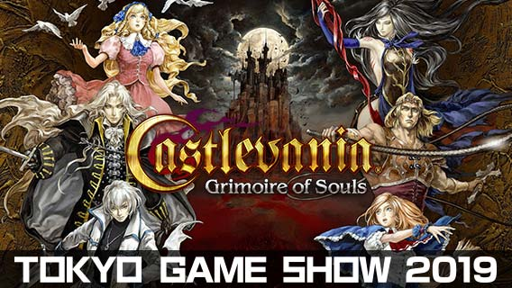

Todo
Actualizaciones
Eventos
Noticias
| Evento06 Enero 2022 | ¡La subasta NFT del 35.º aniversario de Castlevania comenzará el 13 de enero de 2022 a las 14:00 (PST)! | ¡En conmemoración del 35.º aniversario de la serie Castlevania, subastaremos arte de NFT con escenas de juegos, música de fondo y elementos visuales principales de títulos anteriores! Habrá un total de 14 NFT, uno de cada tipo. ¡El nombre (apodo) del primer postor de cada artículo se publicará en el sitio web oficial! |  Para más detalles > |
| Evento9 Sep. 2020 | ¡Demostración práctica de Castlevania Grimoire of Souls en TGS 2019! | ¡Venga a visitar el stand de exhibición de KONAMI en el Tokyo Game Show 2019, celebrado en Makuhari Messe del 12 al 15 de septiembre, y pruebe la última demostración del nuevo juego para dispositivos móviles, Castlevania Grimoire of Souls! En el stand habrá disponible una experiencia para un solo jugador y para varios jugadores. ¡Aquellos que participaron en la demostración práctica recibirán un obsequio de cuerda para saltar para matar vampiros! ¡No te pierdas esta oportunidad de probar nuestro nuevo juego Castlevania! |  |
| Evento 11 Enero 2018 | El original de Netflix, la temporada 2 de Castlevania se lanza hoy！ | La Temporada 2 de Castlevania en Netflix basada en la serie de Castlevania comenzará a partir del 26 de octubre de 2018. ¡La Temporada 3 también ha sido confirmada! | Ir a la web oficial de Netflix > |